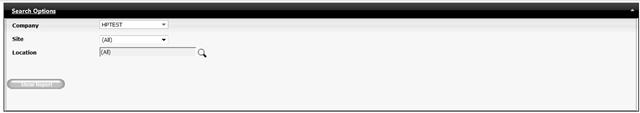
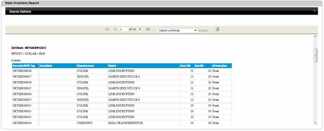

Rack Inventory Report
Rack Inventory report will show asset data in terms of rack with start RU and End RU of each asset. Report data can be filtered to show asset data of a particular site or of a particular location.
To view Rack Inventory Report,
1. Navigate Reports>>Rack inventory Report in the DCTrackMobileWeb menu bar.
You will see the Rack Inventory Report screen.

Figure 153: Rack Inventory report screen
11. Provide the required information.
12. Click Show report  button to display the report.
button to display the report.

Figure 154: Rack Inventory Report with data